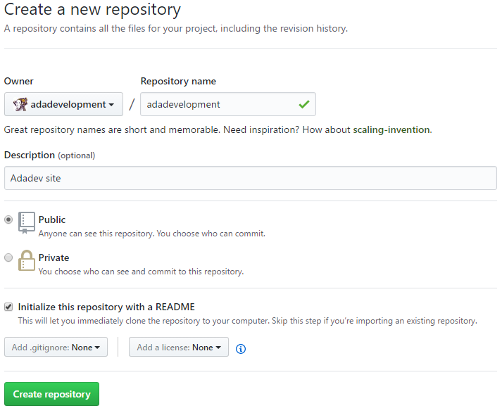

O Adadev é hospedado no Github Pages. O Github oferece hospedagem gratuita de sites estáticos, ou seja, somente páginas HTML, CSS, JavaScript. Neste artigo, vou explicar como criar um site hospedando-o gratuitamente no Github e fazer o buscador do Google indexar seu conteúdo.
Primeiramente, você precisa ter uma conta no Github. Acesse github.com e crie uma conta. Vá em "New repository": você deve achar facilmente este botão, mas ele também se encontra no menu + no canto superior direito da tela, ao lado do perfil.
O nome do repositório deve ser o mesmo nome de usuário da sua conta. Forneça uma descrição e marque a opção "Initialize this repository with a README" para não ter o trabalho de criar depois.
Você pode adicionar, editar e remover arquivos do repositório usando apenas a interface do Github, se não quiser instalar o Git. Adicione o index.html e seus os demais arquivos do site ao repositório na branch master. Você pode adicioná-los pelo botão "Upload files". Pode também editar cada arquivo abrindo-o e clicando em "Edit this file" ou pode removê-lo em "Delete this file". Não existe opção para excluir o conteúdo de uma pasta inteira, mas depois de remover todos arquivos de uma pasta ela é removida automaticamente.
Faça um código limpo, use as tags corretamente e adote práticas de SEO (Search Engine Optimization) para melhorar sua indexação nas ferramentas de busca.
E é isso! Alguns minutos depois você pode acessar seu site em nome-do-seu-usuario.github.io =)
Para que sua página e seu conteúdo apareçam nas pesquisas do Google rapidamente, acesse o Google Webmasters, entre na sua conta Google e cadastre o seu site. Para comprovar que o site é seu, ele solicita um método de verificação, como por exemplo, adicionar uma página ao site com um código fornecido pelo Google. Após o cadastro, pelo Search Console, clique no seu site, acesse o menu Rastreamento / Buscar como o Google. Busque suas páginas e solicite a indexação. Está pronto! Dê um google no seu site =)